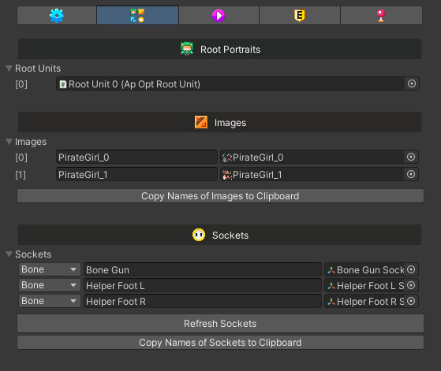
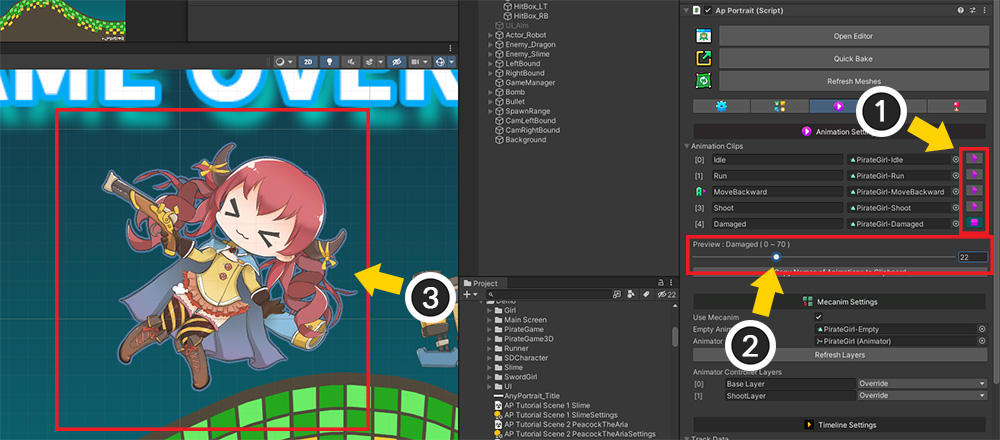

AnyPortrait > Manual > Inspector UI
Inspector UI
1.4.8

If you select an apPortrait object created with AnyPortrait in the Unity editor, the information appears in the Inspector.
This page explains the elements of the inspector.

The basic configuration of the inspector is as above.
1. Open Editor : Open the editor and choose to edit the current object right away. (If Optimized Bake, you can open the editor but not edit.)
2. Quick Bake : Bake right away.
3. Refresh Meshes : Refresh the meshes of the baked character.
4. Tab : You can view by switching the property UI according to the type.
5. Properties : Detailed properties are displayed according to the selected tab.
6. Show All Properties : You can check by opening all properties of apPortrait. (There is a lot of data, so the performance of the editor may be slow. For developers.)

The first tab shows basic properties and properties related to the prefab.
1. Update Options : These are options related to updates.
- Main Logic Event : Set the event where the main logic that updates apPortrait is called. (Related Page)
- Is Important : It updates every frame or intermittently, depending on the character's importance. (Related Page)
- Mesh Update Frequency : Option to play animations at low FPS. (Related Page)
2. Sorting Options : Set options regarding rendering order. (Related Page)
3. Billboard : It can be rendered in 3D level using the billboard option. (Related Page)
4. Root Motion : This is an option to apply the position in the animation to the Transform. (Related Page)
5. Prefab : If the object is a Prefab, this property is additionally displayed. You can check and control the connection status with the prefab. (Related Page)

In the second tab, referable sub-objects are shown in list format.
1. Root Portraits : You can see the root units.
2. Images : Images are shown, and names can be copied to the clipboard.
3. Sockets : All sockets of the mesh or bone are shown. You can find that Transform or copy its name.

The third tab shows the animation clip list and settings related to Mecanim and Timeline.
1. Animation Settings : A list of animations appears. An "A" icon appears in front of the autorun animation, and you can copy the names or preview them.
2. Mecanim Settings : These are the necessary settings when using Mecanim. (Related Page)
3. Timeline Settings : These settings are used when linking with Unity's Timeline. (Related Page)

The fourth tab displays settings related to animation events.
For the description of the animation event UI, please refer to Related Page.

In the fifth tab you can see the control parameters.
Here it is possible to see how the character moves right in the Unity editor by manipulating the control parameters.
Preview Animations in the Unity Editor

With the Animation tab selected, you can preview the animation using the slider.
(1) Press the "Play" button of the animation you want to preview.
(2) The animation preview slider will appear.
(3) If you move the slider, the animation suitable for the frame is calculated and displayed in the Unity editor. If you want to end the preview, just press the "Stop" button for the animation again.
Please note that the animation preview has the following limitations.
- Clipping mesh rendering does not work.
- Animations do not play in real time.
- If the billboard option is turned on, character rendering may look strange.
Preview Control Parameter Results in Unity Editor

If the control parameter is manipulated with the control parameter tab selected, it will be reflected on the character as shown above.
As long as the control parameters are not controlled by animations or external scripts, it is possible to manipulate them in the inspector while the game is running.